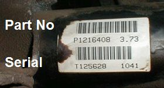
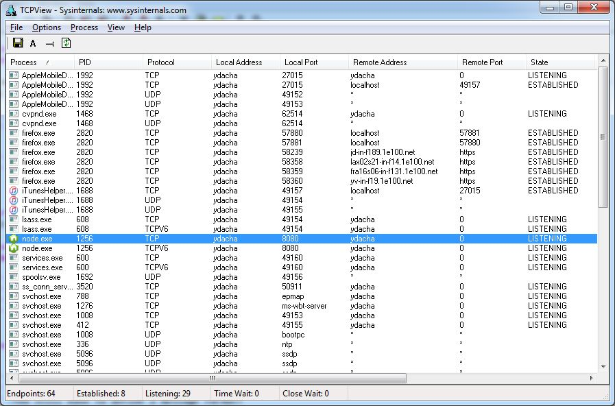

Real-time Messaging to Webapps from a Production Database
David Johnson, djohnson@ommc.com, www.djohn89.com
Outline
- Automotive Assembly Line
- Break
- TCP Sockets Review
- Websockets
The goal of this talk is to describe an automotive assembly line and to encourage web developers to use websockets in their web applications. See RFC 6455 and Websocket API for more details.
Automotive Assembly Line
- Electric nutrunners/bolt runners
- Barcode scanners
- RFID
- Alarms
Electric nutrunners/bolt runners

- Nuts and bolts are assembled using torque tools
- Popular manufacturers: Stanley, Atlas CopCo
- Ethernet communication module records exact torque, angle, rundown count, etc. per engineering specs
Barcode scanners
- Before attaching a part, the part number must be scanned to make sure the right part was picked
- The serial number must be scanned for billing and inventory management
- A computer program records these scans into a database
Error Proofing

RFID


- Skillets ride on a conveyor system tracked by RFID tags and antennas
- Real-time tracking is critical for correctly building vehicles
- A computer program records the RFID events into a database
How Alarms Work
- The PLC detects an error condition (e.g., a vehicle presses a limit switch before the torques are done), stops the production line, and turns a bit on
- A communication program sees the bit turns on and logs it into a database
- The cell leader sees the alarm and helps the operator to finish their job, and the error condition is removed
- The PLC turns off the bit and allows the line to resume moving
Theoretical Assembly Line

- Automotive assembly lines are primarily composed of torque tools, barcode scanners, RFID, and alarms
- Operators must complete their jobs inside the workstation defined by the RFID antennas or else alarms will be activated
- The events from these systems comprise the Manufacturing Execution System (MES), a type of supervisory control and data acquisition (SCADA)
Video: TSAP assembly

Summary of video
- Multiple assembly lines (frame, axle, ML1, ASRS, ENG, ML2)
- RFID used in each line to track skillets
- Problems are located using alarms
Decking
Finished Product

Examples of applied websockets
- Andon Board Upgrade (alarms, productivity calculations)
- Broadcast Elimination (paperless production)
- RFID Tracking (faster internal messaging)
- RepairTech webapp
Old Andon Board

- Light bulbs on a stadium-style scoreboard
- Shows 2 alarms (ML1, ML2)
- Limited to simple statistics
New Andon Board Webapp

- New 80" TVs with JSP/Tomcat and CometD servlets
- Shows up to 8 alarms
- Calculates detailed statistics
Andon Board Messages
- PLC turns bit on (conveyor stopped due to no torque at station 6)
- Communication program sees bit, logs to database and sends CometD message to Andon Board servlet: {type: Alarm, Line: ML1, Station: 6, Message: Torque Overrun DC Tool}
- Andon Board javascript receives message, displays alarm to alert supervisor
Andon Board Example

Broadcast Elimination

Printed broadcasts were wasteful ($50,000+ per year)
- ... and became unnecessary (computer error proofing, barcode scanners, digital displays).
- So we replaced them with tablet PCs displaying a webpage
Broadcast Display Webapp

Broadcast Display webapp receives messages from RFID system: {type: Arrival, Line: ML2, Station: 4, SKID: A053, VIN: 1C4... }
- It receives messages as new vehicle orders come in (for materials tracking)
- It sends messages to the RepairTech webapp (to request repairs)
RepairTech Webapp

This webapp tracks vehicles that need repairs
- Repair Technicians physically fix the vehicle and then fill out a form
- Quality Inspectors double-check the repairs
- Internal statistics are calculated (FTC, MTTF)
Messaging Overview

- Using webapps has been very helpful for efficient communication of events in MES (Alarms, RFID, etc.)
- Websockets are a natural fit for this system
- CometD integrated easily with existing Java infrastructure and internal websites
Conclusions - Automotive Assembly Line
- Torque tools, barcode scanners, RFID, and alarms comprise the Manufacturing Execution System
- Messaging patterns vary based on physical design and engineering constraints
- Andon boards, Broadcast Display, and RepairTech use Websockets to display information to production team
Break
TCP Sockets Review
TCP connects two endpoints (defined by IP addresses and port numbers) and allows symmetric, byte-oriented data transmission over a socket (as if reading from and writing to a file).
- Think of the socket as a file.
- You have to define a message format!
- The server listens on a port; the client connects. Afterward, transmission is symmetric.
How many bytes can you read if you request to read 1000 bytes?
TCP Sockets as File IO
- Disk file operations: open, close, read, write, seek. File format is defined by application
- Socket operations: open, close, read, write. No seek. Network format is defined by application
- Asynchronous vs. synchronous operations: framing, latency, reliability, complexity
Sockets are very similar to disk files, but the reliability is much worse.
How much data did you actually read or write? How do you know if the other party is still there? Can your program block forever?
Classic Socket Problems - Partial buffer reads
You request to read 100 bytes (a complete message) from the socket. You receive 30 bytes.
Message Framing fixes this problem. Messages must have a length prefix or specific bytes at the beginning and end. Continue reading 70 bytes.
You read 170 bytes. The 70 bytes are for the first message; the next 100 bytes are for a subsequent message.
TCP guarantees the order of data is preserved, but it doesn't guarantee the size of any individual operations.
Classic Socket Problems - Connection silently drops
You request to read 100 bytes, but you never receive any data. How do you know if the other party is still there?
Keepalive messages fix this problem. Every 15 seconds, you write a dummy message to the server, which echoes another dummy message (ping/pong). No Keepalive means the connection dropped.
TCP can only detect network failures by writing data to the socket. Reading is a silent operation.
Classic Socket Problems - Asynchronous Operations
Can your program block forever? You request to write 10,000 bytes (100 messages), but the OS only writes up to 1,000 bytes in each data frame.
The write() calls begin to block, waiting for acknowledgement because the receiver has a finite buffer size (the TCP window).
TCP cannot guarantee that a read or write operation completes by any specific time, so your program must be asynchronous to remain responsive to the user. Use callbacks, events, threads, or queues.
Solutions to Classic Socket Problems
- Any TCP-based protocol must use Message Framing, Keepalive Messages, and Asynchronous Operations.
- A good protocol and library will fix these problems for you, but your application must be aware of them
- Websockets includes free Message Framing, but your library still needs to provide Keepalive Messages, and your program must still use Asynchronous Operations.
TCPView demo
Download TCPView here (free!)
Long Polling
Long Polling is an older alternative to websockets. Think of an HTTP request that doesn't end.
Every request with long polling must resend all headers (~800 bytes out of a 1500 byte MTU). Cookies can eat up a lot of bandwidth. Most headers don't change, anyway.
GET /servlets/SomeServlet HTTP/1.1 Host: www.somehost.com User-Agent: Mozilla/5.0 (Windows; U; Windows NT 6.1; en-US; rv:1.9.1.5) Gecko/20091102 Firefox/3.5.5 (.NET CLR 3.5.30729) Accept: text/html,application/xhtml+xml,application/xml;q=0.9,*/*;q=0.8 Accept-Language: en-us,en;q=0.5 Accept-Encoding: gzip,deflate Accept-Charset: ISO-8859-1,utf-8;q=0.7,*;q=0.7 Keep-Alive: 300 Connection: keep-alive Cookie: JSESSIONID=j0Uto+XV00fds-qZCfTUNA__.h422a Pragma: no-cache Cache-Control: no-cache
Websockets
- A websocket is an Upgraded HTTP connection (from HTTP/1.1 to WS/WSS)
- Minimal message framing; no headers; server can push data to client.
- All TCP Caveats apply to websockets
Websocket data frame
0 1 2 3
0 1 2 3 4 5 6 7 8 9 0 1 2 3 4 5 6 7 8 9 0 1 2 3 4 5 6 7 8 9 0 1
+-+-+-+-+-------+-+-------------+-------------------------------+
|F|R|R|R| opcode|M| Payload len | Extended payload length |
|I|S|S|S| (4) |A| (7) | (16/64) |
|N|V|V|V| |S| | (if payload len==126/127) |
| |1|2|3| |K| | |
+-+-+-+-+-------+-+-------------+ - - - - - - - - - - - - - - - +
| Extended payload length continued, if payload len == 127 |
+ - - - - - - - - - - - - - - - +-------------------------------+
| |Masking-key, if MASK set to 1 |
+-------------------------------+-------------------------------+
| Masking-key (continued) | Payload Data |
+-------------------------------- - - - - - - - - - - - - - - - +
: Payload Data continued ... :
+ - - - - - - - - - - - - - - - - - - - - - - - - - - - - - - - +
| Payload Data continued ... |
+---------------------------------------------------------------+
Websocket Server
- A HTTP server supporting websockets is required. E.g., node, tomcat
- SSL is strongly recommended because the websocket security is very weak, and TCP packet checksums are not immune to collisions
- Also, some deep packet inspecting routers and mobile data carriers will drop websocket traffic
- Your library should provide a fallback to long polling for these situations
Websocket API Example
function testWebSocket()
{
var websocket = new WebSocket("ws://localhost:8080/", "echo-protocol");
websocket.onopen = function(evt) {
document.write("Connected!");
websocket.send("Hello world!");
};
websocket.onmessage = function(evt) { document.write("Received " + evt.data); };
}
Launch echo demo
Node js server code
var WebSocketServer = require('websocket').server;
var http = require('http');
var server = http.createServer();
server.listen(8080, function() { ... });
wsServer = new WebSocketServer({ httpServer: server });
wsServer.on('request', function(request) { ... } );
Message Queues
- Additional message queue functionality you'll need: more detailed message format, client identification, channels, publish and subscribe, at least once delivery, idempotent messages
- If you don't do these things, be prepared to deal with Fallacies of distributed computing, the Byzantine Generals' Problem, and CAP Theorem
Message Queue Properties
- client identification: a unique identifier is assigned to each client
- message identification: a unique identifier is assigned to each message (by application ID, timestamps, sequence numbers, etc.)
- message channels: messages are sent on a channel, which segments clients
- publish and subscribe: clients can publish messages to a channel, which relays them to some number of subscribing clients
- at least once delivery: the server takes ownership of a message and resends it to clients until they acknowledge receiving it, then sends a confirmation to the originator
- idempotent messages: receiving the same message more than once has no effect.
Additional Properties
- message persistance: if you need persistance, use a real message queue system (not just websockets)
- Atomicity, Consistency, Isolation, Durability: if you need these, use a database
Examples of real world libraries
- Javascript: Socket.IO, SockJS, and many others
- Java: CometD, Jetty, Resin
- ASP.NET: SignalR
- Various Message Queues: RabbitMQ with STOMP, Apache ActiveMQ, IBM MQ Series
- Now you can finally build an application and solve a business problem!
CometD servlets and Node JS
CometD(Java) and socket-io(node.js) provide:
- message framing (start, stop, length)
- keepalives (aka. heartbeats, to detect communication loss)
- client identification
- channels (segmented clients) with publish and subscribe
- fallback to long polling (IE8 and older, mobile data providers, etc.)
They do NOT provide:
- message persistance
- at least once delivery guarantee
- Atomicity, Consistency, Isolation, Durability
Conclusions - Websockets
- Websockets are fast and efficient, but be aware of limitations of all TCP sockets
- Some message queue functionality is available
- Choose a client and server library with these limitations in mind
End
Prizes
Your IP:
Your SID:
Outcome:
Prize ID:
Winner SID:
Outcome: